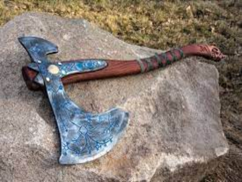

Hacha de Leviatan

Descripción
El Hacha Leviatán es el arma principal de Kratos que sustituye a las Espadas del Exilio en God of War (2018) y en God of War: Ragnarök. Se considera como una de las armas más poderosas de los Nueve Reinos. El hacha fue forjada usando los gritos helados de troles gélidos, dándole la capacidad de lanzar ataques de hielo capaces de congelar incluso cosas no corpóreas. El Pomo del arma es sustituible y cada uno le concede cualidades adicionales distintas, lo mismo ocurre con las runas que se pueden imbuir en ella.
Precio
99,99€